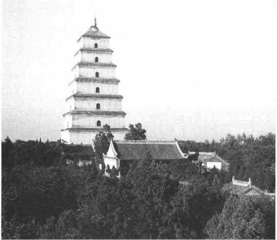

科举制度是指朝廷允许普通士人和官员都可以自愿向官府报名，经过分科考试，依照成绩从中选取人才和授给官职的一种制度。这种新的选官制度同以前选举制度的根本区别不在于进行分科考试，而是允许普通读书人可以自愿报名参加官府的考试。
隋朝建立后，中小地主的势力得到加强。隋末农民大起义进一步摧垮了魏晋以来的豪门世族势力。唐朝建立后，社会生产力迅速发展，封建地主经济进入了一个繁荣时期。这时中小地主阶级的经济力量进一步壮大，他们迫切要求掌握一部分政治权力来维护自己的利益。另一方面，为了加强中央集权的统治，隋唐统治者对官僚机构的建制做了相应的调整，实行了三省六部制，使得官僚机构更为完备，分工也更加细密。官僚机构的调整和膨胀，也使得补充大量的官吏成为可能。科举制度既能满足广大的中小地主要求做官参政的愿望，也能更广泛地吸收、笼络人才，把他们输送到各级官僚机构中去，这是符合封建地主阶级长远利益的，因此得以确立和发展。
科举制度的实行，还须有必要的物质条件。在唐代，手工造纸在全国已经普遍发展，生产的数量也越来越多。唐朝发展起来的雕版印刷术，对文化的传播与发展起了巨大的推动作用。书籍可以大量抄写、印行，使读书人便于阅读和应付考试。特别是五代时期，开始由朝廷主持刻印儒家的《九经》，更为投考科举的读书人提供了大量的规范课本。文具方面，这时期的笔墨制造水平也得到提高，使广大读书人更便于书写。
在隋朝，文帝、炀帝都曾多次诏令官员向朝廷分科举人；炀帝时还设置了进士科，以考试策问取人。这些都表明，隋朝时已有科举的萌芽。经过一段发展过程，科举作为比较完备的选官制度，方才在唐朝确立起来。
在汉代的察举选官中，已经分有孝廉、秀才、贤良方正等科目，并且也考试策问。但是那时参加考试的人，须是经官府推荐，考试也只是用以决定授予官职的高低。唐代的科举则是允许普通士人和官员都可以自愿报名，这就扩大了选举范围，使封建地主阶级的选举制度能够发挥更大的效力。在考试科目方面，新的科举制度与以前的选举制度也有某些继承关系。前文提到，魏晋南北朝时期对于孝廉、明经侧重于考试经学，对于秀才则侧重于考试文章策问。在唐代的科举考试中，明经逐渐取代了孝廉，仍以考试经学为主；与此同时，由于秀才科考试日益严格，考生很难被录取，于是另立进士科，考试内容仍然以策问为主，但是录取标准却放宽了许多。进士科的设立，更容易满足广大考生登第做官的愿望，因而更具有吸引力。
唐代参加科举考试的考生大体有两种：一是朝廷所设国子监、弘文馆、崇文馆以及各地的州、县学馆的学生，称为生徒。他们在学校内考试合格以后，便可以参加朝廷于尚书省举行的科举考试，也称为省试。二是不在学馆的普通读书人，可以向所在的州、县官府报考。地方州、县逐级对他们进行考试，合格的人被送到京城长安参加尚书省的省试。这样的人叫做乡贡。此外还有现任官员参加的科考，一般是品级较低的官员，参加制科考试。
唐代科举考试在不同的时期，设立的科目也不尽相同，随时有增减，前后总计不下几十种。其中常见的有进士、明经、明法、明字、明算、一史、三史、开元礼、道举等科。此外还有制举和武举。
唐朝所设各科，以应考进士、明经的人最多。其中又以进士科最为人崇慕，也最难考，百人中仅取一二人。明经科每百人可取一二十人，比进士科录取名额多出十倍。由于唐朝宰相多是进士出身，就更提高了进士科的声价，报考进士科的人也越来越多，每次总有一两千人报考。进士科取中的人，最多不过三四十人，少的时候仅数人。由于当时投考科举的书生们都习惯穿白色麻布袍衫，所以人们把考中的进士称为“白衣卿相”、“一品白衫”，赞美他们是考生中的佼佼者。
进士科以考时务策为主，后来也加考帖经和杂文。帖经是把经书某页前后两边都遮盖上，中间只留一行，再用纸把这一行中的三个字帖住，让考生把被帖住的三个字读出来。杂文是指箴、铭等文体。唐玄宗以后，又把诗赋规定为必考项目。
明经科中又可以分为五经、三经、三礼、三传等等。明经科主要考帖经，还要考墨义。墨义是要求把经文二千字左右的段落连同注疏默写出来。明经科有时也加考时务策。
明法、明字、明算、诸史等科则是分别考试律令、文字学、数学、史学等。道举科设于唐玄宗时，考试《老子》、《庄子》等道家著作。
武举始创于武则天时，要考步射、马射、马枪、负重等，也要考其语言、身材。唐代武举只实行了一段时间便停止了，但是却为后世开创了先例。
制科是由皇帝特别召集一些官员和知名人士举行的考试，其中又可分为贤良方正、直言极谏等名目。考试的日期和项目都由皇帝临时决定。制科是朝廷网罗非常人才的一种办法，但是往往不被人们敬重，以为非正途出身。例如有张瓌兄弟八人，其中七人是以进士出身，一人由制科出身，于是大家就不愿和这一个兄弟坐在一起，称他为“杂色”。
参加朝廷省试的考生要在当年十月到长安来报到。自唐玄宗开始，省试一般都由礼部侍郎主持。载初元年（689），武则天在洛城殿亲自策问诸举人，开创了殿试的先河。不过，这次是皇帝亲自主持省试，与后世的省试之外皇帝另行殿试的做法还有区别。唐代省试一般都在京城长安举行，中唐以后，也有时分别在长安、洛阳两都举行，这时便称主持考试的礼部侍郎为“知两都”。
省试时，考场内部都用荆席围隔，考生们坐在廊下答题。考生进入考场时，须自带水、炭、脂炬、餐具等，经胥吏唱名、搜检衣物，方依次入场。唐代的科举考试，一般不采取试卷糊名（指将试卷上考生姓名密封起来）、誊录（把考生试卷另誊写一份供考官评阅，以免考官辨认笔迹）等做法。考试时间可以夜以继日，一般是日暮后烧尽两三支木烛，便须交卷。
省试被录取称为“及第”。第一名称“状元”或“状头”。新科进士互称“同年”。主考官被称为“座主”、“座师”，被录取的考生便是他的“门生”。新取中的进士都要到杏园去举行宴会，称“探花宴”。这时要选出两名少年俊秀的进士为探花使，令他二人遍游长安名园，采摘各种名花点缀宴会。所以唐代著名诗人孟郊在其登第诗中诵道：“昔日龌龊不足嗟，今朝旷荡恩无涯，春风得意马蹄疾，一日看尽长安花。”新进士们还要到慈恩寺大雁塔题名留念，称“题名会”。（图6—3）又要大宴于曲江亭子，谓之“曲江会”。还有其他一些庆祝活动，都是为了显示荣宠。不过，当一些反对科举制度的守旧官僚主持朝政时，这些庆祝活动便被减去许多。

图6-3 西安唐慈恩寺大雁塔
在唐代，考中进士只是有了出身，即具备了做官的资格，下一步还要经过吏部选试合格，才被授予官职。选试包括身、言、书、判四个方面。先考书、判，也就是考其书写工整、文理通达的程度；然后再试身、言，即观察是否相貌端正、口齿清楚。选试也分为博学宏词、拔萃等名目。前者着重于考试论述文章，后者主要考试司法案件的判辞（判决书）。例如唐代文学家柳宗元中进士后，便是以“博学宏词”授官集贤殿正字；大诗人白居易中进士后，是以“拔萃”得任秘书省校书郎的。选试通过后获得的官职并不高，即便是进士、明经，所授官位也无非八九品，但是从此便成为封建统治阶级中的一员了。
如果选试未能通过，则可求当权官僚为之“论荐”，即向朝廷保举求官。再不成，便到藩镇节度使处去做幕僚，经过一定时间争取被保举得官。唐代文学家韩愈在考中进士后，三次参加吏部选试，都未能通过。于是他便去请求宰相贾耽、赵憬等人为之论荐，但是那些当权者不赏识他，不肯帮忙。韩愈只好离开长安，到宣武军节度使董晋的麾下去做幕僚。以后由董晋荐举，才被授予秘书省校书郎等官。
在唐代，凡被举送参加省试的考生，可称“举人”，而应进士科考试的考生，被泛称为“秀才”。这些称呼虽然后世仍沿用，但是意义已有很大变化，须注意避免混淆。
唐代确立的科举制度把选官权力集中到朝廷，加强了中央的统治权力。由于科举制度对于那些依仗门第荫封而得官的大官僚贵族是个威胁，因此在长达两百年的唐朝朋党之争中，它一直受到这部分人的攻击和反对。科举制度为庶族中小地主，乃至出身寒微的平民知识分子开辟了一条升官的道路，因此受到中小地主和广大知识分子的拥护，从而增强了封建地主阶级的统治基础。科举制度把读书、应考、做官三件事紧密地联系在一起，至使天下读书人怀着“朝为田舍郎，暮登天子堂”的幻想，整日埋头苦读。许多读书人在“功名”二字的利诱下，不再关心国家的盛衰、人民的疾苦了，他们俯首帖耳地服从封建统治者的一切安排。特别是朝廷规定的考试内容、录取标准等，都是以封建地主阶级的思想意识、伦理道德为准则的，它引导人们朝这个方向去努力，这更便于统治者加强其封建思想统治。所以唐朝诗人赵嘏一语道破此中奥妙，他说：“太宗皇帝真长策，赚得英雄尽白头。”［23］
在唐代，若要科举考中，考生们必须求得当权官僚显贵或有文学声望的学者把自己推荐给主考官，这在当时是公开进行的。由此便产生了唐代的行卷风气。所谓行卷，是考生们为了求得推荐人的信任和赏识，便把自己平日的文学著作工整地抄写在手卷上，呈献给推荐人。这种手卷和做法都叫做“行卷”。行卷中呈献的作品体裁广泛，包括古诗、律诗、辞赋、骈文、散文、小说等等。行卷的第一篇非常重要，它能够影响阅读者的第一印象。例如《唐摭言》记载，白居易初至京师应举时，他向著名诗人顾况行卷。顾况见白居易姓名，便戏弄说：“长安米很贵，在这里‘居’住并不容‘易’。”颇有轻视之意。待开卷读第一遍《赋得古原草送别》诗，诵至“野火烧不尽，春风吹又生”一句时，不由得大加赞许，说：“有句如此，居天下有甚难！”于是为白居易去推荐。这种行卷的做法，使一些有文学才干的青年，有机会把自己平日的成就展现出来，在遇到有眼力的先辈时，便可以得到提拔。这也促使一些读书人在应考之前注意认真提高自己的文学修养，努力创作出高水平的作品来，因此对于唐代文学的发展起到了一定的积极作用。但是行卷的做法也使一些考生想方设法弄虚作假。他们或者抄袭别人作品，或者作些投机文字，巴结权贵。行卷风气延至五代仍然盛行，直到北宋实行糊名考校、秘密阅卷，方才停止。
此外，唐代科考中还有一种“作诗赎帖”的做法。进士科的考试着重于文学写作，应考的秀才们平时注重提高文学水平，不屑去死背经书。但进士科也要考帖经，于是唐玄宗天宝初年便采取了“作诗赎帖”的通融办法，允许考生不考帖经，而以作诗代替。这样一来更加提高了诗词在科考中的地位。应该说，唐诗在中国诗歌发展道路上达到空前的成熟和繁荣，除了出于其自身规律和社会等原因外，科考中规定须考诗赋以及“作诗赎帖”的做法，也起了一定的推动作用。